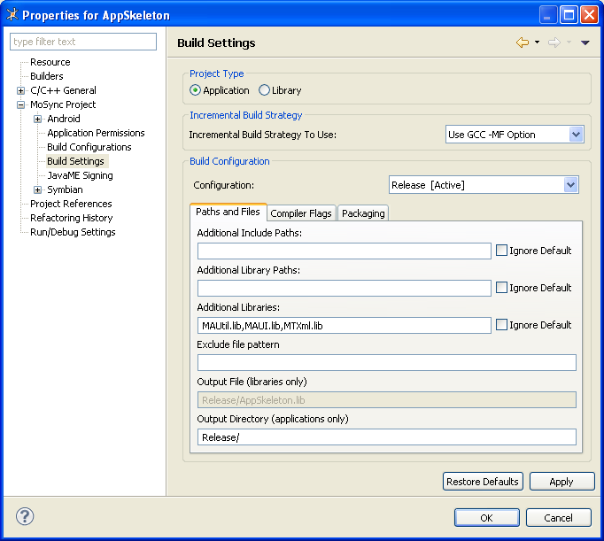

If you are writing cross-platform mobile apps in the MoSync® SDK, you will probably want at some point to connect to the Internet to get data. Typically, this data will be in XML or in JSON format. If you are getting XML data, the MoSync SDK has a built in XML parser (MTXml) you can use to parse it.
There are also string functions in the MoSync MAUtil library which can be used to read XML in some simple cases. In this tutorial we take a look at retrieving XML data and the various ways of reading the data from it.
There are several ways to get XML data into your application:
Note that this tutorial covers XML only. If you are working with JSON data, we have a blog post called Working with JSON Data that describes how to handle it.
If you've got simple requirements for XML, then you can read it very easily. Take this example from the Yahoo! XML format for weather data.
<title>Conditions for Carcassonne, FR at 10:00 am CEST</title> <geo:lat>43.22</geo:lat> <geo:long>2.35</geo:long>
If we just want to get the latitude out of this data, we don't need to parse the complete XML.
String xml = readXml();//Build a string with the xml in it
int start = xml.find("<geo:lat>") + 9;
int end = xml.find("</geo:lat>", start);
String lat = xml.substr(start, end - start);
We can use the standard String functions to get the values out of the XML. The start of the data can be found by getting the position of <geo:lat>. 9 is added to this value, which is the length of the string we're looking for. The value of start is now the number of characters from the start to the beginning of the latitude value. The end of the value is found in a similar way, but we don't need to add any additional characters. Finally, the value of latitude can be extracted using the substring function (substr), passing it the start location and the length of the data to extract (end - start).
Broadly speaking, there are two ways to handle XML documents: via the DOM or via SAX.
If you load the XML into an object model that represents the XML structure, you can then look at the properties of each XML element in the model and navigate the model with an XPATH. This is very common approach for manipulating XML and is called using a Document Object Model or DOM. Java and C# developers will be very used to dealing with XML like this.
It is easy to use this approach, but can use a lot of memory. If you have a burning need for DOM processing, read the blog post on our website which details a lightweight DOM approach to XML with the MoSync SDK.
<myTag>
it will raise an event to say that it has found an open tag. The program listening to events, or receiving the callback can then decide whether or not to do something with this knowledge.
The MoSync SDK comes with our open source SAX parser called MTXml (the MoSync Tiny XML Parser).
To use the MTXml parser, you need to include the MTXml.lib file in your project dependencies. To include the MTXml.lib file:

You can parse XML from a variety of sources. Most likely this will be from an Internet connection, processing XML as it is being downloaded. The MoSync XML API can start parsing XML from a connection before it has completely downloaded.
To process XML, the minimum you need to do is to create a C++ class which inherits from MTXml/MTXml.h and implements XmlListener. This will contain the callback classes which the XML processor will call when it finds the appropriate XML.
You must implement all of the methods in XmlListener. If you leave any methods unimplemented, the program may crash if a call to an unimplemented method is made. Just create an empty method, or in the case of mtxunicodeCharacter, use the standard implementation.
This is an example from a class which is designed to process XML data. It implements the XmlListener interface, which allows it to process XML.
class XMLProcessor : public XmlListener
{
public:
XMLProcessor();
~XMLProcessor();
//XmlListener
void mtxEncoding(const char* value);
void mtxTagStart(const char* name, int len);
void mtxTagAttr(const char* attrName, const char* attrValue);
void mtxTagStartEnd();
void mtxTagData(const char* data, int len);
void mtxTagEnd(const char* name, int len);
void mtxParseError();
void mtxEmptyTagEnd();
unsigned char mtxUnicodeCharacter(int unicode);
}
When you are processing XML you need to keep track of where you are in the file. If your code is processing a complex XML file, you may want to create some sort of state handling. The calls between the callbacks are essentially stateless, and your code has to be robust enough for them to be called in any order -- even in an unexpected order.
The critical parts of the code are the mtxTag... methods. These are called when the processor gets the XML elements. Generally, you are passed the value which has been processed.
We can process the XML we looked at earlier with these mtxTag... methods. Here is the XML again:
<title>Conditions for Carcassonne, FR at 10:00 am CEST</title> <geo:lat>43.22</geo:lat> <geo:long>2.35</geo:long>
The mtxTagStart method is passed the name of the tag. For instance, if the XML contained <title> the mtxTagStart would be called with 'title'. We can examine these values at runtime.
void XMLProcessor::mtxTagStart(const char* name, int len)
{
lprintfln("%s", name);
lprintfln("%d", len);
}
When this code is called for the <title> tag, it will display 'title' and 5 in the console.
To be able to read the <title> tag, we need to maintain the state of the XML. When the mtxTagData method is called, it needs to know which tag the data is for. A good way of doing this is by keeping a variable with different values you can test for.
One way of doing this is to create an enum of the different tags you want to process. This code shows an enum representing the tags in the XML, and a private int variable which will keep state:
enum XmlTags
{
TITLE,
LATITUDE,
LONGITUDE
};
int mState;
When you receive a tag, you can then set the mState variable.
void XMLProcessor::mtxTagStart(const char* name, int len)
{
if(strcmp(name, "title", 5) == 0) //Compare the char* with the word 'title'
{
mState = TITLE;
}
}
In the next section, we will see how we can use this state information when reading data.
When data inside an XML tag is received, the mtxTagData method in your XmlListener will be called. As an example, assume you have this data:
<title>Conditions for Carcassonne, FR at 10:00 am CEST</title> <geo:lat>43.22</geo:lat> <geo:long>2.35</geo:long>
If we imagine that this is the complete feed, then the mtxTagStart method will be called three times, with 'title', 'geo:lat' and 'geo:lon'.
The mtxTagData method will be called at least three times, once with 'Conditions for Carcassonne, FR at 10:00 am CEST', once with '43.22' and once with '2.35'.
mtxTagData may actually be called more than this. If the data source is coming from the Internet, then it may be called before then end of the data. Imagine that the packet we get from the connection contains this data.
<title>Conditions for Carcassonne, FR at 10:00 am CEST</title> <geo:lat>43.2
This is processed, and the XML callbacks are made. The call to mtxTagData for the 'geo:lat' tag will contain '43.2' at this point, and not '43.22'
We then get some more data:
2</geo:lat> <geo:long>2.35</geo:long>
mtxTagData will now have been called four times. In fact, you'll never want to start processing in the mtxTagData method. Save it for mtxTagEnd. A good implementation for mtxTagData would be:
void XmlProcessor::mtxTagData(const char* data, int len)
{
//Add the data to the buffer, but don't process until we've got the end tag
temp.append(data, len);
}
Where 'temp' is a String. This will continue to fill up until the end tag is reached.
Because we've been using the mState variable to hold state information, we know how to deal with this data. In mtxTagEnd we can use the data we collected in mtxTagData, and the state information we've set up in mtxTagStart to do something useful with the data.
void XmlProcessor::mtxTagEnd(const char* name, int len)
{
switch(mState)
{
case TITLE:
// At this point, we know we are in the <title> tag, and that we've
// received all the data it contains.
mMyClass->title = temp;
// Use the contents of the string 'temp' we've populated in mtxTagData.
break;
case LATITUDE:
break;
case LONGITUDE:
break;
}
}
You can now perform different operations on the data you have got with the state handling you've created.